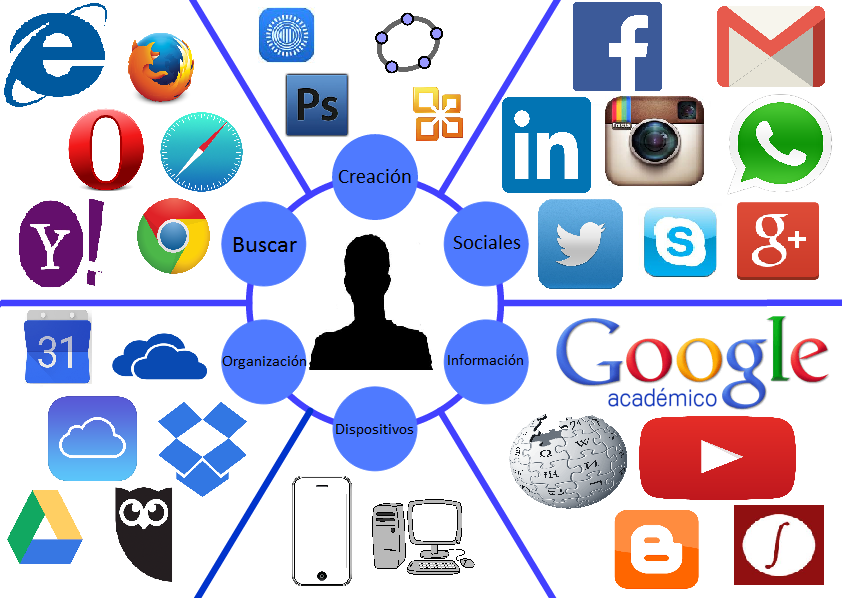

Entorno Personal de Aprendizaje (EPA)¶
En este contexto surge el concepto de Entorno Personal de Aprendizaje (EPA): el conjunto de herramientas, recursos y personas con los que un individuo organiza, gestiona y enriquece su aprendizaje.
Un EPA integra desde fuentes de información (buscadores, bases de datos, redes sociales, bibliotecas digitales) hasta herramientas de creación y comunicación (editores de texto, gestores de proyectos, plataformas colaborativas).
Desarrollar y mantener un EPA de manera crítica y responsable es fundamental para desenvolverse en la sociedad digital actual.

¿Cómo crear un Entorno Personal de Aprendizaje?¶
-
Define tus objetivos de aprendizaje Antes de seleccionar herramientas y fuentes, reflexiona sobre qué deseas aprender.
-
Selecciona tus fuentes de información Elige recursos de confianza (extremadamente importante) y relevantes para tus intereses.
- Blogs y revistas especializadas.
- Podcasts y videos educativos.
- Libros y artículos académicos.
- Redes sociales profesionales.
-
Utiliza herramientas para organizar y gestionar el conocimiento Para optimizar el aprendizaje, es importante almacenar y estructurar la información de manera efectiva:
- Feedly o Pocket: Para guardar artículos.
- Notion, Evernote o OneNote: Para tomar notas y crear bases de datos.
- Trello o Asana: Para planificar el aprendizaje por objetivos.
-
Participa en comunidades de aprendizaje El aprendizaje colaborativo es clave. Interactúa con otros profesionales a través de:
- Grupos de Facebook (si aún lo usas) o LinkedIn.
- Foros especializados como Quora o Reddit.
- Eventos presenciales y webinars.
-
Evalúa y ajusta tu EPA de manera periódica Tu EPA debe evolucionar según tus necesidades y objetivos. Revisa periódicamente:
- ¿Siguen siendo útiles las fuentes que usas?
- ¿Las herramientas que empleas son efectivas?
- ¿Estás alcanzando tus objetivos de aprendizaje?
Actividades¶
📝 AA1.2 Analizando tu EPA¶
(C.ESP5 / CE5.1 / IC1-3p)
Analizar distintas herramientas digitales, explicar cómo funcionan y clasificarlas según su función principal en el aprendizaje y la vida digital.
- Completa la tabla explicando el funcionamiento de cada herramienta.
- Marca con ✅ la función principal de cada herramienta:
- Crear contenido
- Organizar contenido
- Comunicar y colaborar
- Buscar y filtrar información
| Herramienta | Funcionamiento | Crear contenido | Organizar contenido | Comunicar y colaborar | Buscar y filtrar |
|---|---|---|---|---|---|
| Google Docs | |||||
| Google Drive | |||||
| Gmail | |||||
| Zoom | |||||
| Trello | |||||
| YouTube | |||||
| Canva | |||||
| Microsoft Teams | |||||
| Feedly |
- ¿Cuál de estas herramientas consideras más útil para tu aprendizaje y por qué?
- ¿Hay alguna herramienta que podrías usar más para mejorar tu organización o comunicación en tus estudios? Explica cómo.